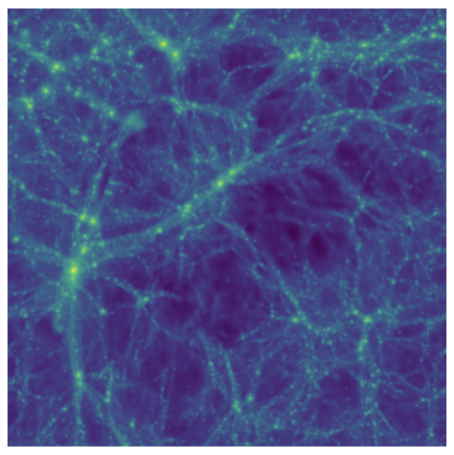

Saumya Chauhan
California Institute of Technology
I’m a Machine Learning Engineer on DoorDash’s Search Experience team, and I’m currently applying to Fall 2026 Ph.D. programs. I recently graduated from Caltech with a B.S. in Computer Science and a minor in Information & Data Science.
My research interests lie in AI, computational social science, and social computing, focusing on interpretable, data-driven ML systems for social good and real-world impact.
At Caltech I’ve been fortunate to work with Professors Adam Wierman, Georgia Gkioxari, and Katie Bouman.
CV: download here.


News
Submitted “When GenAI Meets Fake News: Understanding Image Cascade Dynamics on Reddit” to MIT URTC 2025.
Co-authored “Is This Tracker On? (ITTO)”—submitted to NeurIPS 2025.
EchoBlue reached the finals of the Bill Gross Entrepreneurship Competition.
Presented real-time edge-camera threat detection at the Verkada Tech Fair.
Selected Publications

When GenAI Meets Fake News: Understanding Image Cascade Dynamics on Reddit
Submitted to MIT URTC 2025

Is This Tracker On? A Benchmark Protocol for Dynamic Tracking (ITTO)
Submitted to NeurIPS 2025

Using Multi-Modal Diffusion Models to Reconstruct Dark Matter Fields
Submitted to Caltech–UChicago AI+Science 2025
Posters / Talks

When GenAI Meets Fake News: Understanding Image Cascade Dynamics on Reddit
CMS + IST Meeting of the Minds, Caltech, May 2025

EchoBlue: AI Assistant for Caregivers of Children with Autism
Nexus Horizon Builder SoCal Showcase & Bill Gross Competition, Apr 2025

Real-Time Threat Detection on Edge Cameras with InternVideo2
Verkada Spring Tech Fair, Mar 2025